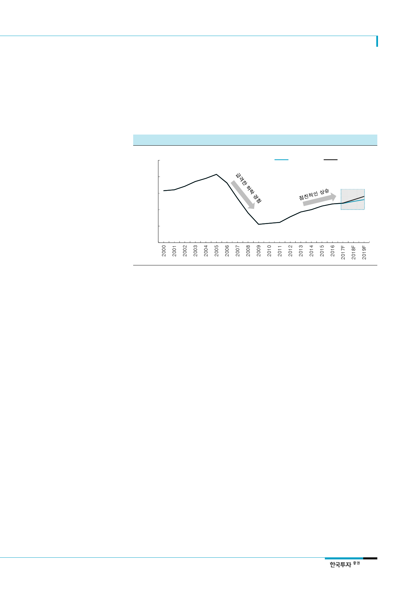

두산밥캣(241560)
미국의 양대 모기지 업체는
주택착공지수가 지속적으로
상승할 것이라고 전망
실제로 미국의 2대 모기지인 Fannie Mae, Freddie Mac이 최근 발표한 자료에 따르면 미
국의 착공지수는 2018, 2019년에도 안정적으로 늘어날 전망이다. Fannie Mae의 2018년,
2019년 주택착공 추정치 평균은 각각 125만호, 130만호이고, Freddie Mac의 추정치는
각각 130만호, 140만호이다. 양 대 기관 모두 수요는 늘어나지만 주택 재고량이 넉넉하지
않아 착공이 늘어날 것으로 전망했다.
[그림 12] 미국 양대 모기지 업체들의 신규착공지수 전망 – 2019년까지 점진적인 증가
(천호)
2500
Fannie Mae
2000
1500
1000
500
0
Freddie Mac
자료: Fannie Mae, Freddie Mac, 한국투자증권
생산 문제로 상반기 매출 차질
그러나 retail 판매는
양호했음
생산문제 해결되어 가고 있음
딜러들의 줄어든 재고를
다시 쌓아주는 re-stocking
모멘텀 내년 상반기까지 기대
2. 생산문제 해결과 딜러들의 re-stocking 모멘텀
3분기부터 드디어 매출액이 늘어나기 시작했고 증가세는 당분간 지속될 것이다. 상기한
것처럼 시장은 지속적으로 좋았지만 밥캣의 매출액은 올해 상반기에 전년대비 감소(달러
기준 -1%, 원화기준 -7%)했다. 가장 큰 이유는 자체 생산 line 재조정 문제 때문이었다.
북미에는 그위너 공장에서 SSL, CTL, MEX를 생산하고 있었는데 생산량이 늘어나면서
과거 중단시켰던 비스마르크 공장에 MEX 라인을 이전시키면서 생산차질을 빚었다. 또한
부품 일부 부품 수급에도 차질을 빚어 시장 호황기를 누리지 못했다. 그러나 이는 밥캣이
매출로 인식하는 도매(wholesales) 관점의 문제였다. 소매(retail) 판매량은 여전히 양호해
시장점유율은 큰 변동폭이 없었다. 또한 dealer들의 적정재고 MOH(Month-On-Hand
월간재고량)는 약 4.5개월에서 3개월로 낮아져 있다.
3분기부터 생산라인이 정상화 되어가면서 매출액이 늘어났다. 그러나 여전히 retail 수요
도 강해 아직 dealer들의 재고량을 늘려주기에는 부족했다. 따라서 밥캣은 내년 1분기
retail 비수기를 틈타 dealer들의 재고량을 채우기 위한 매출까지 더해진다면 최소한 내년
상반기까지 밥캣의 매출액은 안정적으로 증가할 것이다.
주택착공허가의 13%가 영향
단기에는 주택 착공 늦어질 것
3. 허리케인 Harvey 복구사업으로 기계 수요 증가
지난 8월 발생한 허리케인 Harvey, Irma로 인해 단기 주택착공은 다소 부정적인 영향을
받겠지만 장기적으로는 compact 건설기계 수요 증가세를 더욱 부추길 것이다. 올해 발생
한 허리케인의 영향으로 휴스턴에서만 15,500 이상의 가구가 유실됐고 총 270,000이상의
가구가 피해를 입었다. FEMA(미국연방비상관리국)에 따르면 Harvey에 직접적인 영향을
받은 지역은 지난해 주택건축허가(Housing permit) 총량의 약 13%(Texas 4.1%, Florida
8.9%)에 해당한다. 따라서 단기적으로 해당 지역에는 주택건설 활동이 다소 늦어질 수 있
다.
5